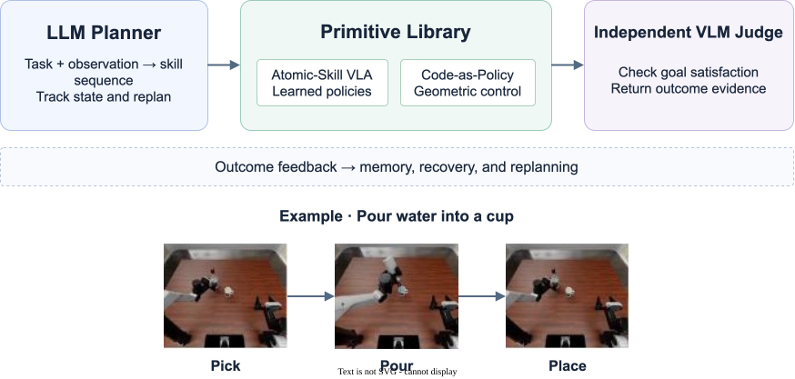

Task Planning Agent
Understands the instruction, decomposes the task, routes primitives, tracks state, recovers from failure, and replans. The evaluated implementation uses GPT-6-Astra.
Embodied AI · Agentic VLA · Real2Sim2Real
GigaHarness-r is a self-evolving hybrid harness that assigns task-level reasoning to an LLM and local physical execution to reusable Atomic-Skill VLA and Code Policy primitives.
Instead of asking one model to reason, plan, and control every motion, GigaHarness-r separates slow cognition from fast execution. The planner decides what should happen; specialized primitives handle how it happens.

Understands the instruction, decomposes the task, routes primitives, tracks state, recovers from failure, and replans. The evaluated implementation uses GPT-6-Astra.
Atomic-Skill VLA provides learned skills such as pick and place. Code-as-Policy uses explicit perception, geometry, and motion planning. Both share an execution interface.
Uses multi-view observations, reference states, and temporal evidence to assess goal satisfaction and support switching, recovery, and replanning.
Retains task procedures, primitive experience, and global knowledge so that execution traces can inform what happens next.
Real2Sim2Real (RSR) refines reusable task graphs. Agent-guided trajectory selection uses execution experience to improve policy training and skill routing.
Task graph refinement
When the robot fails, the agent reconstructs the scene in simulation and traces the failure to a node or transition in the Graph-as-Policy (GaP). It repairs the relevant step, transition, or recovery branch, then tests the full task in simulation and revalidates the revised graph on the robot.
Policy training and skill routing
For training, the agent selects successful expert trajectories that address diagnosed skill gaps and uses them to update learned policies. At execution time, it retrieves relevant prior skill executions and uses their verified outcomes to rank existing primitives for the current scene.
AgileX and RoboDojo evaluate the harness. RoboTwin 2.0 evaluates fixed-budget demonstration selection.
Seven language-conditioned and multi-step tasks, 20 trials per task, 128 successes out of 140. The paper reports evaluation without benchmark-specific fine-tuning.
Compared baseline maximum: GigaBrain-0.7 at 86.51%.
Average complete-task success over 14 memory and long-horizon tasks. Average score: 60.43%.
Strongest listed overall baseline: 46.86%.
Twelve tasks after adding 200 expert demonstrations to an initial set of 600 with atomic-action-guided selection.
Same-budget random selection: 65.38%; Vanilla Codex: 70.21%.
RoboDojo efficiency comparison, with one episode per task and system.
AgileX tasks 1–5 probe object and target selection, color, and left/right relations. Tasks 6–7 test multi-step skill composition.
Place the bowl into a plate or basket
100%Place the bowl of the specified color into the basket
90%Place the spoon of the specified color onto the plate
100%Place the fork on the left or right into the basket
70%Place the wood block on the left or right onto the plate
100%Place the tableware on the table
80%Sort the objects into different baskets
100%Each Real2Sim2Real (RSR) iteration starts with a failure recorded on the real robot. The agent reconstructs the failure state in simulation, locates the affected step in the task graph, and tests candidate repairs. A candidate must pass all seven moves in simulation and then pass validation on the real robot before it is adopted. Further real-robot failures inform the next iteration.
For example, if a ring collides with a peg during transport, simulation can compare different lift heights and transport paths while keeping the verified grasp. Drag the divider to compare the simulation and real-robot footage on the same timeline.
Automated data collection
The paper's supplementary collection loop couples task execution with outcome assessment, logging, reset, and repetition when the existing demonstration pool cannot cover a diagnosed need.